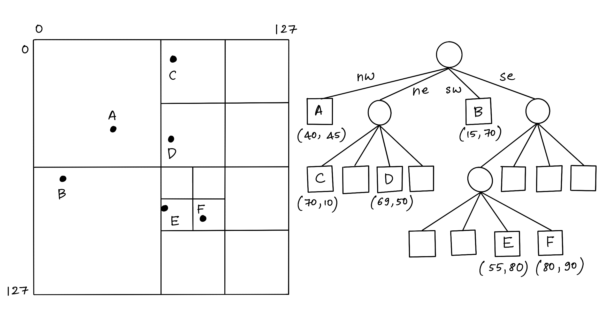
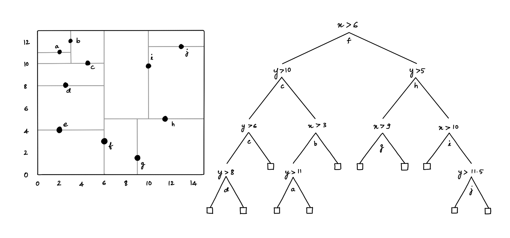
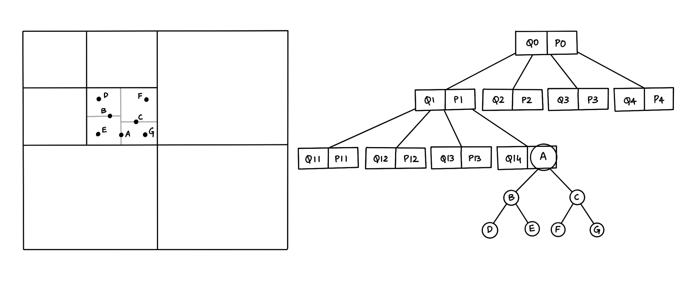

Hybrid Spatial Data Structures: Introduction
·
Code on the Road·
#Algorithms
#Java
#Data Structures 3 min read
3 min read
Let’s grow the trees! — Totoro.
What’s a Spatial Index?
A spatial index is a data structure that allows for accessing a spatial object efficiently, which is a commonly used technique in spatial databases. Without indexing, searching would require a “sequential scan” of all records in the database, thereby increasing the processing time. The Minimum Bounding Rectangle (MBR), often termed the Bounding Box (BBox), serves as an object approximation in a spatial index construction process.
Different types of Spatial Index
Various spatial indices have been developed that yield measurable performance differences. Broadly, there are two types of structures for spatial index: Space Driven Structures are based on partitioning of the embedding 2D space into grids/cells, mapping MBRs to the cells according to some spatial relationship (overlap or intersect) Data-driven Structures are organized by a partition of the collection of spatial objects, where Spatial Data Objects are grouped using MBRs adapting to their distribution in the embedding space.
Popular Spatial Index:
- Space Driven Structures: Quadtree and KD-tree
- Data-driven Structures: R-tree and variants
Quadtree
A quadtree is a specialized form of the fixed grid index in which the resolution of the grid is varied according to the density of the spatial objects to be fitted.

Figure 1: Quadtree
In a Quadtree, each node represents a bounding box covering some part of the space being indexed, with the root node covering the entire area. Each node is either a leaf node that contains one or more indexed points and no children, or it is an internal node with exactly four children, one for each quadrant obtained by dividing the area covered in half along both axes. Hence the name “quadtree.”
KD-tree
A KD-tree is a binary tree where each node represents an axis-aligned hyper-rectangle. Each node specifies an axis and splits the set of points based on whether their coordinate along that axis is greater than or less than a particular value, such as the coordinate median.

Figure 2: KD-tree
The KD-tree can be used to index a set of k-dimensional points. Every non-leaf node divides the space into two parts by a hyper-plane in the specific dimension. Points in the left half-space are represented by the left subtree of that node, and points falling to the right half-space are represented by the right subtree [2].
Hybrid algorithm
K-D tree has a lot of benefits; however, it is non-trivial to implement efficiently and has issues with high-dimensional data such as line and polygon. Also, Quadtree has a significant disadvantage: an object intersecting the boundaries at level zero will be placed automatically into the root node irrespective of its size. The biggest challenge using quadtrees is to find a good factor for k. The root node can be overfilled with small, poorly partitioned objects if the factor is too small. On the other hand, using a factor too large can lead to excessively loose bounding lengths and, therefore, have too much overlapping between nodes on one level.

Figure 3: Hybrid Tree (Quad-KD Tree)
A hybrid algorithm combines two or more algorithms that solve a similar problem. For example, a hybrid tree data structure that combines the features of Quadtree and the KD-tree. The above figure (3) shows a hybrid structure with seven points inserted in a map, so the map is divided into four parts according to the quadtree structure, and each part is subdivided into four parts. If one part has a line or polygon stored in a quadtree structure, but other parts contain points, we use a KD-tree structure inside this part to store the location of each point [2]. Similarly, we can think of a hybrid tree data structure that combines the features of R-tree and the KD-tree, where we use a KD-tree structure inside a smaller bound in the R-tree to store the location of each point.
In order to verify the performance of the hybrid tree structures to retrieve spatial objects: hybrid-spatial-index is a simple comparison of hybrid trees to search points and rectangles on a 2D plane.
However, the project is a WORK IN PROGRESS ⚠️, and stay tuned for more updates 🚀
References:
[1] Zhang, X, and Du, Z. (2017). Spatial Indexing. The Geographic Information Science & Technology Body of Knowledge (4th Quarter 2017 Edition), John P. Wilson (ed). DOI: 10.22224/gistbok/2017.4.12
[2] Mahmood, Mahmood. (2019). A Proposed Hybrid Spatial Data Structure based on KD Tree and Quad Tree. Jokull. 69. 2–6.

Cite this article as: Adesh Nalpet Adimurthy. (Mar 6, 2022). Hybrid Spatial Data Structures: Introduction. PyBlog. https://www.pyblog.xyz/hybrid-spatial-index
 #index
#index